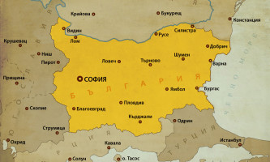

THE GREAT HISTORY OF BULGARIA

Химн на Република България-Мила Родино---->
След Втората световна война България попада в съветската сфера на влияние и през 1946 г. е преименувана на Народна република България. Начело на доминиращата БКП и на държавата застават: Георги Димитров (председател на МС от 1946 до 1949 г.; генерален секретар на ЦК на БКП от 1948 до 1949 г.) Васил Коларов (председател на МС от 1949 до 1950 г.) Вълко Червенков (председател на МС от 1950 до 1956 г.; първи секретар на ЦК на БКП от 1949 до 1950 г.; генерален секретар на ЦК на БКП от 1950 до 1954 г.) Антон Югов (председател на МС от 1956 до 1962 г.) Тодор Живков (председател на Държавния съвет от 1971 до 1989 г.; председател на МС от 1962 до 1971 г.; първи секретар на ЦК на БКП от 1954 до 1981 г.; генерален секретар на ЦК на БКП от 1981 до 1989 г.). През 1971 г. е приета нова конституция, известна като Живковска конституция, която урежда ръководната роля на БКП в обществото и заменя Димитровската конституция от 1947 г. Република България (от 1990 г.) На Ноемврийския пленум на ЦК на БКП през 1989 г. Тодор Живков е освободен от постовете председател на Държавния съвет и генерален секретар, на негово място като застава Петър Младенов – председател на Държавния съвет и генерален секретар на ЦК на БКП, който на следващата година става първият президент на България. През следващите години в страната се провеждат политически и икономически реформи с променлива интензивност. Този период често е наричан Преход на България към демокрация и пазарна икономика, като има различни мнения за това кога приключва.
Задай въпрос
THE GREAT HISTORY OF BULGARIA